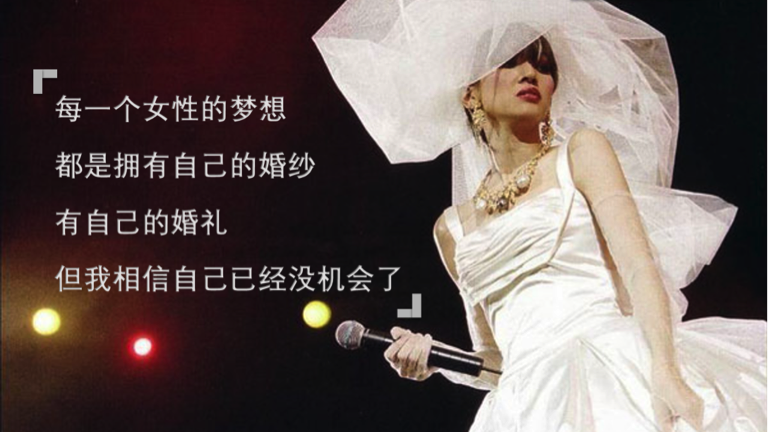
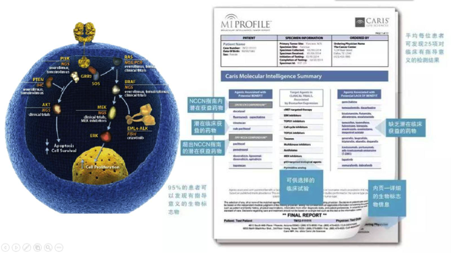
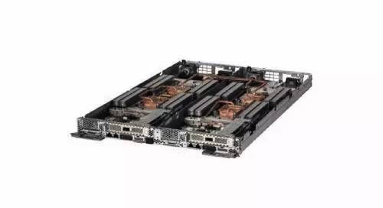

抗癌战争，胜利一定属于人类

全球，每天有将近3万个生命在抗癌的战争中陨落，几乎每个人身边都有过因癌症而去世的人。然而，尽管抗癌之路艰难重重，也总有一些战士不愿对命运妥协，这家名叫Caris Life Sciences的公司决定用科技的力量狙击癌症…
基因技术Caris抗击癌症的秘诀
癌症本质上是一种基因疾病，个体细胞基因组因为各种环境因素发生突变，引起全身细胞癌变，最终导致癌症爆发。由于个体细胞之间存在巨大的差异性，所以传统的治疗手段，无法治愈癌症。
Caris Life Sciences公司通过分析肿瘤患者的个体基因数据，帮助个体患者量身定制效果最大化的治疗方案，实现精准医疗。然而，个体患者的治疗只是抗癌路上的一小步，Caris还通过整合所有个体患者数据，帮助肿瘤学家研究可能诱发癌变的各种情况，化身个体患者间的纽带，推动整个癌症治疗领域向前发展。

Caris肿瘤分子图谱检测技术
随着精准医疗研究进展的加深，更多的医院前来谋求Caris公司的帮助。保存上万名患者的样本数据再将其整合分析的过程让Caris公司传统TB级处理系统几度瘫痪，入不敷出。患者的治疗进程被严重打断，抗癌研究步履维艰。

联想NeXtScale System服务器
柳暗花明联想秘密武器推动抗癌
面对这些挑战，联想使用NeXtScale System服务器搭载联想通用并行文件系统（GPFS）帮助Caris建立PB级数据感知型基础设施，为下一代测序（NGS）分析和数据存储提供有力支持，强大的计算力加上持久无间断的续航能力，帮助医生做出更精准的判断，为广大患者更快获取了更准确的测试结果，用最小的副作用达到最大的治疗效果。
目前为止，联想已经帮助Caris提取分析了超过 65,000名患者的数据，使63个国家地区的患者受益。
抗癌的漫漫长夜，个体生命的光点难免显得孤独而渺小，但数万的光斑聚集在一起，总会照这亮黎明前的黑暗…这场没有硝烟的战争，胜利终将属于人类。